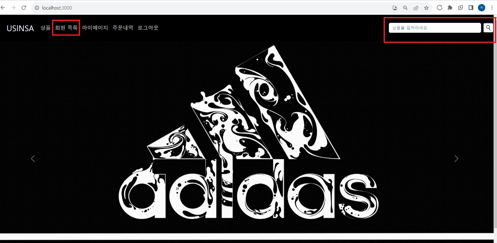
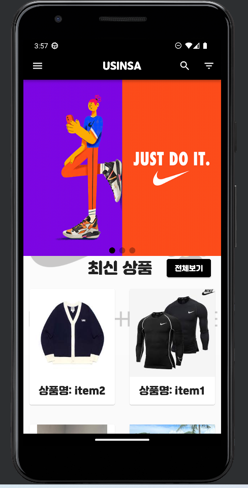
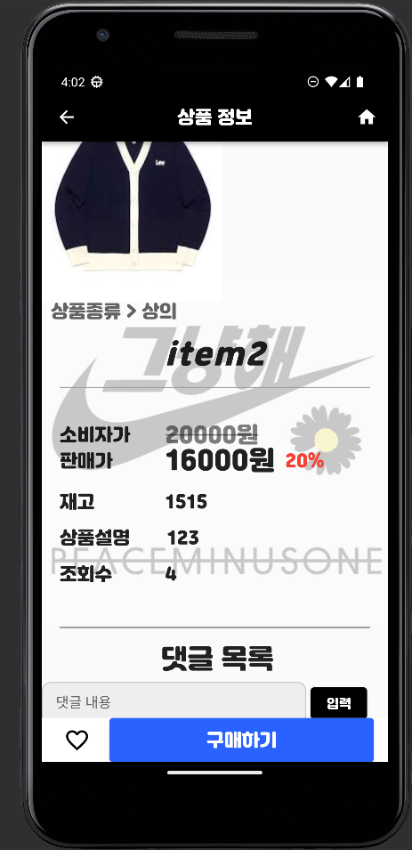
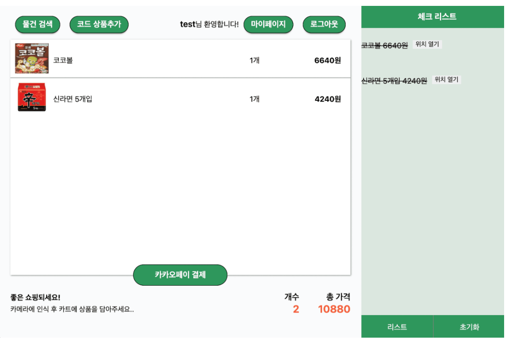

01
웹서비스 개발 경험
React, Spring, MySQL 등을 활용한 웹서비스 개발과 서버 연동 경험을 바탕으로 AI 기능을 실제 서비스 구조에 연결할 수 있습니다.
ABOUT ME
컴퓨터공학을 전공하고 약 1년 10개월간 개발자로 근무하며 웹서비스를 개발하고 운영했습니다. 기능 구현뿐 아니라 서버 연동, 오류 해결, 서비스 운영까지 경험하며 실제 서비스를 완성하는 과정을 익혔습니다.
퇴사 후 약 1년 2개월 동안에도 취업 준비에만 머무르지 않고 웹서비스 외주와 개인 프로젝트를 진행하며 실무 감각을 이어갔습니다. 동시에 빠르게 발전하는 AI 기술과 활용 방법을 꾸준히 탐구하며 기존 웹개발 경험에 AI를 어떻게 연결할 수 있을지 고민했습니다.
CORE STRENGTHS
React, Spring, MySQL 등을 활용한 웹서비스 개발과 서버 연동 경험을 바탕으로 AI 기능을 실제 서비스 구조에 연결할 수 있습니다.
오류를 한 가지 원인으로 단정하지 않고 프론트엔드·서버·통신 구조를 나누어 확인하며 원인을 좁혀가는 방식으로 문제를 해결해 왔습니다.
새로운 기술을 단순히 읽는 데 그치지 않고 직접 적용하고 테스트하며 실제 업무와 서비스에 활용할 수 있는 방법을 찾습니다.
SKILLS
AI 관련 기술은 실제 프로젝트 적용 경험을 중심으로 계속 확장하고 있습니다.
MY JOURNEY
컴퓨터소프트웨어공학과에서 프로그래밍 기초를 익히고 전공동아리 프로젝트를 수행했습니다. Raspberry Pi와 Python을 활용한 GPS 탐색 경험을 통해 하드웨어와 소프트웨어를 연계하는 경험도 쌓았습니다.
웹서비스 개발과 운영을 경험하며 프론트엔드, 백엔드, API 연동, 데이터베이스, 배포 환경 등 서비스 전반을 이해했습니다.
약 1년 2개월 동안 웹서비스 외주와 개인 프로젝트를 진행하며 경험을 이어갔고, 동시에 AI 기술과 활용 방법을 탐구했습니다.
기존 웹개발 경험에 AI 기술을 더해 실제 서비스에서 사용할 수 있는 기능을 구현하고 문제를 해결하는 개발자로 성장하는 것을 목표로 합니다.
PROJECTS

상품 검색과 구매 흐름을 구현한 온라인 쇼핑몰 웹 프로젝트
Java와 Spring을 기반으로 백엔드 서버를 구성하고 MySQL과 연동했습니다. React와 Bootstrap을 활용해 화면을 구현하고 프론트엔드와 백엔드 간 API 통신을 구성했습니다.
GitHub 보기 ↗

기존 웹 백엔드를 활용해 확장한 Flutter 앱 프로젝트
기존 백엔드 서비스를 재사용하고 Flutter/Dart로 모바일 앱을 구현했습니다. 사용자 프로필과 북마크 기능을 추가하고 앱과 서버의 연결 구조를 직접 구성했습니다.
GitHub 보기 ↗
Raspberry Pi와 센서를 활용한 위치 탐색 프로젝트
Raspberry Pi와 Python을 기반으로 Bluetooth Beacon 통신 코드와 GPS 센서 모듈을 활용한 카트 위치 탐색 기능을 구현했습니다. 하드웨어와 소프트웨어를 함께 다루며 팀 프로젝트의 기본적인 협업 방식도 경험했습니다.
PROBLEM SOLVING
오류 메시지와 요청·응답 결과를 확인해 문제가 발생하는 지점을 찾습니다.
프론트엔드, 서버, API Gateway 등 관련 영역을 나누어 하나씩 검증합니다.
가설을 세우고 설정과 코드를 수정한 뒤 여러 환경에서 반복 테스트합니다.
단순히 오류를 없애는 데 그치지 않고 해결 과정과 구조를 다시 확인합니다.
CONTACT
새로운 AI 기술을 빠르게 배우고 실제 서비스에 적용하는 개발자가 되겠습니다.